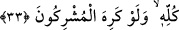

Kendilerinden aktarıldığı kadarıyla onların sözlerinin uygun düştüğü bir kriter ve
dayandığı bir dayanak da yoktur.
“Halbuki kâfirler hoşlanmasa da Allah, mutlaka nûrunu tamamlamak ister”. Yani
Allah, kelime-i tevhidi yüceltmek ve İslâm dinini hâkim kılmak suretiyle nûrunu
tamamlamaktan başka bir şey istemez.
“Kâfirler hoşlanmasa da.” “Kâfirler isteseler de istemeseler de Allah mutlaka
nurunu tamamlamayı diler.” mânâsınadır. Âyette “isteseler de” ifadesi hazfedilmiştir.
Çünkü “istemeseler de” ifadesi, açık bir şekilde ona delâlet etmektedir. Çünkü mânîsi
varken gerçekleşen bir şey, mâni’ olmadığı zaman haydi haydi gerçekleşir.
Hakk’ın tutuşturduğu çerağı
Söndürmeye kalkan saçını, sakalını yakar
33. O, elçisini hidayetle ve hak dinle gönderdi ki müşrikler hoşlanmasa da onu,
bütün dinlerin üstüne çıkarsın.
Yalnızca nûrunu ve dinini tamamlamak isteyen “O, elçisini hidâyetle”, yani
muttakîler için hidayet olan Kur’ân ile “ve hak dinle” hak din olan İslâm ile “gönderdi
ki müşrikler hoşlanmasa da onu bütün dinlerin” diğer bütün din mensuplarının
“üstüne çıkarsın”, yani Rasûlünü galip getirsin. Ya da hak dini diğer dinler üzerine
galip kılsın. Bu da hikmetinin gerektirdiği şekilde hak dinle diğer dinleri nesh etmek
suretiyle gerçekleşir.
Âyette Peygamber’in gönderilmesi bunu gerektiren bir sebebe bağlanmıştır.
Eş‘arî’lere göre ise Allah Teâlânın fiilleri, belli maksatlara bağlı (muallel) değildir.
Fakat bu fiiller, yüce gayelerinin gerçekleşmesini beraberinde getirir. Şu halde
maksadın maksadı olduğu şeyin yerine konulması gibi burada gaye, o gâyenin semeresi
olan şeyin yerine konulmuştur.
Allah Teâlâ müşrikleri, önceki âyette küfür ile vasıflandırdıktan sonra bu âyette şirk
ile vasıflandırmıştır. Çünkü onlar peygamberi inkarın yanına bir de Allah’ı inkarı
katmışlardır.
Şeyhzâde şöyle der: Hak dinin diğer dinlere galebesi, sürekli artarak devam eder, İsâ
(a.s.)’nın inişiyle tamam olur. Çünkü rivayet edildiğine göre Rasûlullah (s.a.), İsâ’nın
inişi hakkında: “Onun zamanında İslâm dışındaki bütün dinler yok olacaktır.”[127]
buyurmuştur.